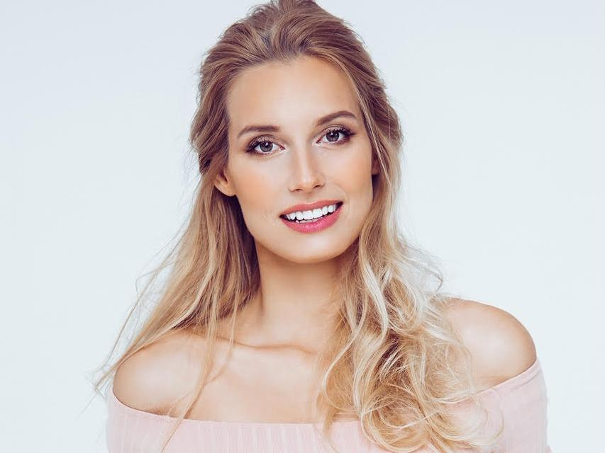
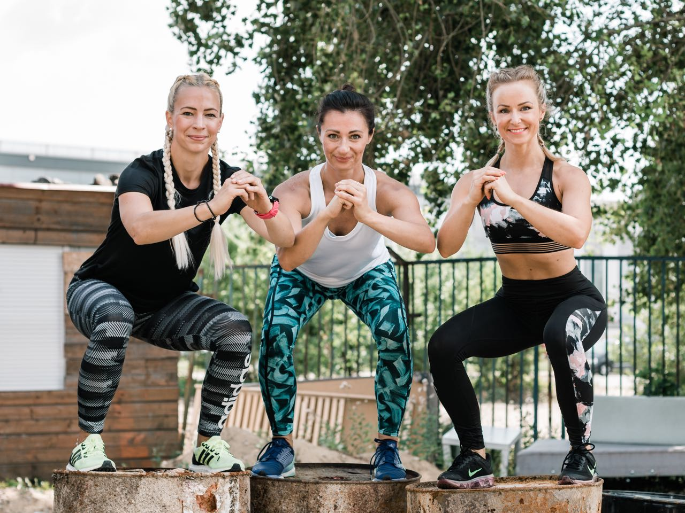

 Ãno, vždy som cviÄila. Už od detstva som mala k cviÄeniu skutoÄne pozitÃvny vzÅ¥ah. Chodila som na plávanie, behala som a venovala sa atletike. Postupne, s pribúdajúcim vekom, som striedala aj formy cviÄenia, ako fitcentrum a crossfit. Vždy som mala totiž problém s tým, že ma nieÄo bavilo iba doÄasne. Po chvÃľke ma to zaÄalo nudiÅ¥ a telo si na záťaž takisto postupne zvyklo. Nemala som svalovicu a chýbal aj dobrý pocit, že som pre seba nieÄo urobila. Potrebovala som zmenu, pohnúť sa niekam Äalej. Odkedy mám malé dieÅ¥a, na cviÄenie už nemám tak veľa Äasu. Sem-tam nejaká rýchla prechádzka, alebo si idem raz za dva Äi tri týždne zacviÄiÅ¥. Doma vÅ¡ak ten priestor ostáva. Na to vÅ¡ak potrebujem motiváciu a tá mi zatiaľ chýba.
 PreÄo ste vlastne zaÄali cviÄiÅ¥? V drvivej väÄÅ¡ine prÃpadov ide o zlepÅ¡enie vzhľadu, nabratie svalovej hmoty alebo schudnutie. A práve toto je základná prÃÄina vzniku znechutenia z cviÄenia v pomerne krátkej dobe. Ak totiž necviÄÃte s radosÅ¥ou, ale použÃvate cviÄenie iba ako prostriedok na dosiahnutie urÄitých cieľov, sami seba muÄÃte.